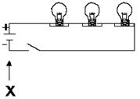
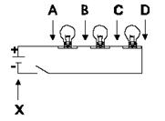

| Objetivo: |
Estudiar la asociación de resistores en serie y verificar la tensión, intensidad de corriente y resistencia del conjunto.
|
|
| Introducción: |
|
En la asociación en serie, si desconectamos uno de los componentes, todo el conjunto se desconecta (este hecho es visible en las
lámparas). Esto ocurre porque en esa asociación la corriente pasa componente por componente y, para llegar al próximo necesita,
primero pasar por el anterior.
|
|
|
| Desarrollo Experimental: |
|
Experimento 1:
Monte la configuración como indica la Figura 1, usando las tres lámparas.
Use la fuente del alimentación y en este caso el interruptor indicado es la propia llave del panel de control.
Acompañe, en la Tabla 1 las acciones sugeridas, ejecutándolas primero para el conjunto de lámparas. Observe atentamente las alteraciones ocurridas y anote en el espacio adecuado de la Tabla1. Para las
medidas de tensión y corriente, observe las indicaciones de la Figura 2.
Realiza los procedimientos de Inicio, y conexión de la interfaz, Sensores y Computadora (Software Excel)”, Inicia el Programa Excel para la adquisición de datos con el voltaje.
Determina el intervalo de tiempo para las mediciones por medio del temporizador.
Debemos recordar que:
Para medir voltajes: se coloca el sensor en paralelo con el circuito.
Teniendo como referencia, los procedimientos realizados y en los datos colocados en la tabla 1, responda el cuestionario.
|
| Resultados y Conclusiones: |
|
1. ¿Cómo saber, de forma sencilla, si en cada uno de ellos, el circuito está
conectado?
2. ¿Cuál es el voltaje, aproximado, de abastecimiento de la fuente, cuando su selector está en 50% y cuándo está en 100%?¿Cómo
podemos determinarlo con exactitud y precisión?.
3. ¿Qué ocurre cuando desconectamos uno de los componentes?¿Cuáles son las implicaciones de este hecho?.
4. ¿Qué podemos afirmar, al respecto de las tensiones sobre cada uno de los componentes y de la tensión total sobre el sistema?.
|
|
|
| Figura 1: |
|  |
| |
| Figura 2: |
|  |
|